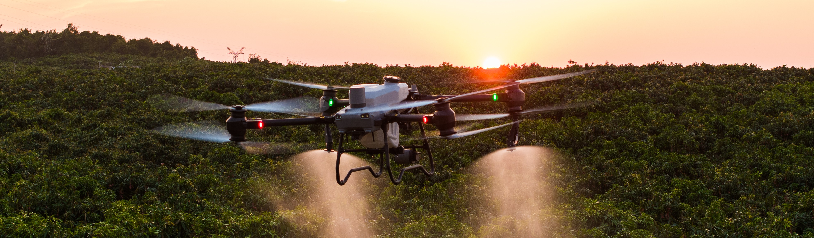

Distributeur officiel DJI — Algérie
Services pour drones agricoles
La réussite d’un chantier dépend du bon dimensionnement du matériel, d’un opérateur formé, de l’entretien et des pièces adaptées. Equip Drones accompagne ces besoins pour les drones agricoles, du choix à la révision.

Choisir l’appareil qui correspond réellement au chantier
Un drone agricole se choisit comme un pulvérisateur : à partir de la surface à traiter, du nombre de passages annuels, du relief, de la distance au point de remplissage et de la logistique de charge. Pas à partir d’une fiche technique lue seule.
Un verger de quelques dizaines d’hectares n’a pas les mêmes besoins qu’un prestataire travaillant sur de grandes parcelles céréalières. Le premier peut privilégier la compacité et le transport ; le second, le débit, la rotation des batteries et l’alimentation sur site. Le dimensionnement comprend donc l’appareil, les batteries, la station de charge, la trémie et les équipements d’application.
Nous fournissons du matériel par le canal officiel DJI, dans une configuration adaptée à la commande. Le devis précise la garantie applicable et les modalités de livraison.
Ce que cela couvre
- — Analyse du parcellaire, des cultures et du calendrier de traitement
- — Dimensionnement de l’appareil, du jeu de batteries et de la station de charge
- — Choix des buses et des accessoires selon les produits appliqués
- — Épandage granulés et semences : configuration de la trémie
- — Devis détaillé et chiffré configuration par configuration
- — Livraison en canal officiel DJI, garantie constructeur applicable
- — Prise en main de l’appareil au moment de la livraison
Aucun prix n’est affiché sur ce site : chaque configuration fait l’objet d’un devis.
Un opérateur formé qui comprend le cadre d’exploitation
Un drone de pulvérisation est une machine agricole de plusieurs dizaines de kilogrammes qui manipule des produits phytosanitaires. Savoir le faire décoller ne suffit pas : il faut connaître le cadre dans lequel on vole et la manière de travailler proprement.
Notre formation au pilotage agricole aborde le cadre d’exploitation en Algérie et les responsabilités de l’opérateur. Consultez notre équipe pour connaître le programme, les prérequis et les documents remis à l’issue de la formation.
La pratique couvre la mise en œuvre de l’appareil, la cartographie, les obstacles et zones exclues, la planification, la dose et la largeur de travail, les batteries, le remplissage et les procédures d’urgence. La préparation du mélange, les équipements de protection et le rinçage font aussi partie du travail agricole.
Ce que cela couvre
- — Cadre réglementaire applicable en Algérie et responsabilités de l’exploitant
- — Mise en œuvre de l’appareil et contrôles avant vol
- — Cartographie de parcelle, obstacles, zones exclues
- — Planification de mission et vol en mode automatique
- — Réglage de la dose, de la largeur de travail et des buses
- — Gestion des batteries, du remplissage et du rinçage
- — Procédures d’urgence : perte de liaison, retour automatique, atterrissage forcé
- — Maintenance de premier niveau à la charge de l’opérateur
Entretenir un matériel exposé à la poussière et aux produits
Un drone agricole nécessite un entretien régulier. Poussière, vibrations, chaleur et résidus de produit peuvent affecter les moteurs, les batteries, les pompes et les buses.
Nous entretenons et réparons les équipements DJI agricoles que nous distribuons. Le diagnostic peut comprendre les journaux de vol, les contrôles mécaniques et électriques, le circuit de pulvérisation, les capteurs et l’état des batteries. Les travaux nécessaires sont confirmés après inspection.
La révision d’inter-saison prépare le matériel à la campagne suivante : nettoyage du circuit, remplacement des joints, filtres et buses usés, contrôle des pompes, des hélices et du train, vérification du firmware. Des résidus laissés dans le circuit peuvent provoquer des obstructions et de la corrosion évitables.
Ce que cela couvre
- — Diagnostic à partir des journaux de vol
- — Remplacement des pièces d’usure et des éléments accidentés
- — Contrôle et rinçage du circuit de pulvérisation, remplacement des buses
- — Étalonnage des capteurs et du radar après intervention
- — Contrôle des batteries : cycles, équilibrage, état physique
- — Révision inter-saison complète avant la campagne suivante
- — Mise à jour du firmware et vérification de la configuration
Des pièces d’origine adaptées à votre matériel
La compatibilité des composants est essentielle sur un multirotor. Une hélice déséquilibrée peut introduire des vibrations ; une batterie inadaptée peut présenter un risque ou mal fonctionner avec l’appareil.
Nous fournissons les pièces DJI d’origine des appareils que nous distribuons : hélices, bras et moteurs, électronique de puissance, batteries intelligentes et stations de charge, pompes et circuits de pulvérisation, buses et jeux de buses selon les débits, filtres et joints, cuves et systèmes d’épandage, antennes et modules RTK.
Il est important de choisir la pièce pour la version exacte du matériel : un même modèle peut utiliser plusieurs révisions de composants au fil du temps. Le canal officiel aide à établir la bonne référence et sa traçabilité.
Ce que nous fournissons
- — Pièces d’usure : hélices, buses, filtres, joints
- — Bras, moteurs et électronique de puissance
- — Batteries intelligentes et stations de charge
- — Pompes, circuits de pulvérisation et cuves
- — Systèmes et trémies d’épandage
- — Antennes et modules RTK
- — Consommables de saison, à anticiper avant la campagne
Canal officiel
Pourquoi passer par un distributeur agréé
Avant d’acheter, comparez aussi l’origine du matériel, la garantie applicable, l’accès aux pièces et l’interlocuteur qui vous aidera en cas de problème.
- ✓ Garantie constructeur selon les conditions applicables au produit
- ✓ Matériel fourni par le canal officiel DJI
- ✓ Pièces d’origine référencées pour votre version exacte d’appareil
- ✓ Prise en main et formation agricoles selon le devis convenu
- ✓ Diagnostic et réparation agricoles locaux, selon l’intervention nécessaire
- ✓ Un fournisseur identifié, une facture et un contact d’assistance
- — Applicabilité de la garantie sur votre marché
- — État du matériel, activation et configuration régionale
- — Origine des pièces et références exactes des composants
- — Modalités de formation, de prise en main et de suivi
- — Lieu de réparation et éventuelles expéditions
- — Interlocuteur et procédure en cas de livraison non conforme
Lorsqu’une pièce est nécessaire pendant une fenêtre de traitement, les questions sont concrètes : quelle référence convient, qui peut la fournir et dans quel délai ? Confirmez la disponibilité et les modalités de service avant de vous engager sur le matériel.
Un projet, une panne, une formation
Dites-nous ce dont vous avez besoin
Vente, formation, entretien ou pièces : décrivez votre situation, nous vous répondons avec une proposition concrète.